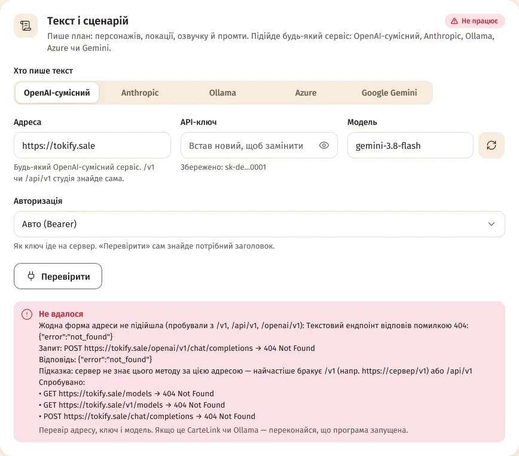
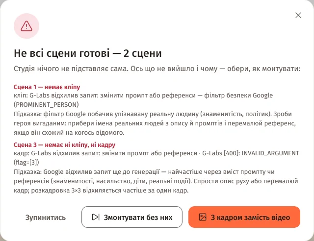
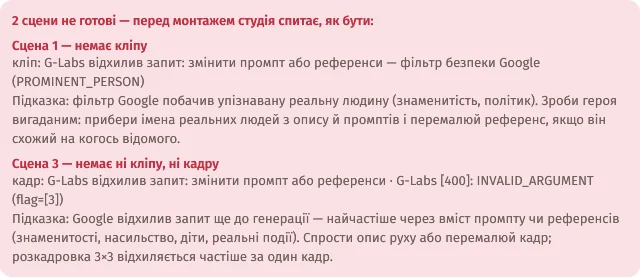

Зміст сторінки
Точна помилка — там, де ти її шукаєш
Коли сервіс відмовляє, студія показує його власну відповідь, а не загальне «щось пішло не так»:
- перший рядок — сервіс і код, напр. «Текстовий ендпоінт відповів помилкою 404: …» або «Текстовий ендпоінт відхилив ключ (401). Перевір API-ключ у Налаштуваннях.»;
- «Запит:» — метод, адреса й код відповіді, напр.
POST https://…/chat/completions → 404 Not Found; - «Відповідь:» — що повернув сервіс;
- «Підказка:» — що найчастіше допомагає;
- «Спробувано:» — кожен запит, який студія перепробувала, коли перевіряла підключення.
Де це видно: на картці сцени («Кадр не вдався», «Кліп не вдався», «Голос не вдався»), у вікні перед монтажем, у «Черзі», у панелі «Перевірити» в налаштуваннях і в Telegram. Ключі всюди замасковані.

Якщо сервіс завершив задачу з помилкою, але не повернув її тексту, студія так і напише: «Сервіс завершив задачу з помилкою, але не повернув її тексту.»
Перед монтажем вирішуєш ти
Натискаєш «Змонтувати відео», а якісь сцени не готові, — студія відкриє вікно «Не всі сцени готові»: «Студія нічого не підставляє сама. Ось що не вийшло і чому — обери, як монтувати». Для кожної сцени — що саме бракує («Сцена 3 — немає кліпу»), точна помилка й підказка.
| Кнопка | Що буде |
|---|---|
| «Змонтувати без них» | Ці сцени (і їхній голос) не потраплять у фільм. |
| «З кадром замість відео» | Сцени без кліпу покажуть свій кадр із рухом; сцени без кадру випадуть, без голосу — пройдуть без репліки. |
| «Зупинитись» | Нічого не монтувати — перезняти сцени на кроках 3–4. |

Ще до монтажу картка «Фінальне відео» показує, яких сцен бракує і чому. А якщо змонтував не всі, готовий фільм нагадає: «У фільмі не всі сцени як у плані:» — з переліком.

Автопілот: що робити з невдалими сценами
Налаштування → «Автопілот» → «Якщо частина сцен не вдалася» — що робити з ними на монтажі:
- «Питати мене» (за замовчуванням) — автопілот зупиниться перед монтажем і покаже, що не вийшло й чому;
- «Змонтувати без них», «З кадром замість відео» або «Зупинитись» — як однойменні кнопки вище, але без питання.
Коли автопілот чекає, у проєкті з'являється «Автопілот чекає на твоє рішення перед монтажем» з кнопками «Обрати, як змонтувати» і «Перезняти невдалі».
Старий перемикач, з яким автопілот монтував фільм попри невдалі сцени, прибрано. Тепер автопілот спершу спитає. Хочеш, щоб він монтував сам, — вибери в цьому полі «Змонтувати без них» або «З кадром замість відео».
З телефона
Підключений Telegram-бот пришле список невдалих сцен із помилками й кнопками «🎬 Змонтувати без них», «🖼 З кадром замість відео», «🔁 Перезняти невдалі» і «⏹ Зупинитись». Як це виглядає.
Omni Flash через G-Labs: ще одна спроба
Якщо G-Labs відхиляє кліп Omni Flash через зміст (наприклад, фільтр безпеки Google), а знімався він з розкадровкою 3×3 чи референсами, студія один раз пробує ще — лише з кадром і простим описом руху, без розкадровки, попереднього кадру й референсів. Не вийшло й так — у помилці буде видно обидві спроби.
Відхилену розкадровку 3×3 студія замінює одним кадром — на картці сцени буде «Без розкадровки 3×3».
Це стосується лише Omni Flash через G-Labs. Для Google Omni і RoyalTechno такого повтору немає.
Озвучка довша за кліп — «перезняти?»
Переозвучив репліку, і нова вийшла довшою за вже знятий кліп? Сцена отримає позначку «Озвучка довша за кліп», а на картці — «Озвучка довша за кліп — перезняти?». «Повторити» зніме кліп під новий голос; сцена також потрапить у «Перезняти змінені».
Кліпи не обрізає в кінці
З «Динамічною довжиною сцен» (і зі своєю озвучкою) кліп тепер довший за репліку з запасом: +0,6 с і час на перехід до наступної сцени. Репліки, які герої кажуть у кадрі, студія рахує з повільнішим темпом мови — тож останні слова не обриваються.
Питання
Можна, щоб автопілот завжди монтував сам?
Так: Налаштування → «Автопілот» → «Якщо частина сцен не вдалася» → «Змонтувати без них» або «З кадром замість відео».
Де взяти повний текст помилки?
На картці сцени на кроках 3–4, у вікні перед монтажем і в «Черзі»; для підключень — «Перевірити» в картці сервісу. Питаєш у чаті спільноти — додай цей текст і studio.log.
Помилка каже про фільтр безпеки Google. Що робити?
Прочитай «Підказку» під помилкою — вона пояснює причину. Найчастіше допомагає прибрати імена реальних людей з опису й промптів, спростити опис руху або перемалювати кадр.